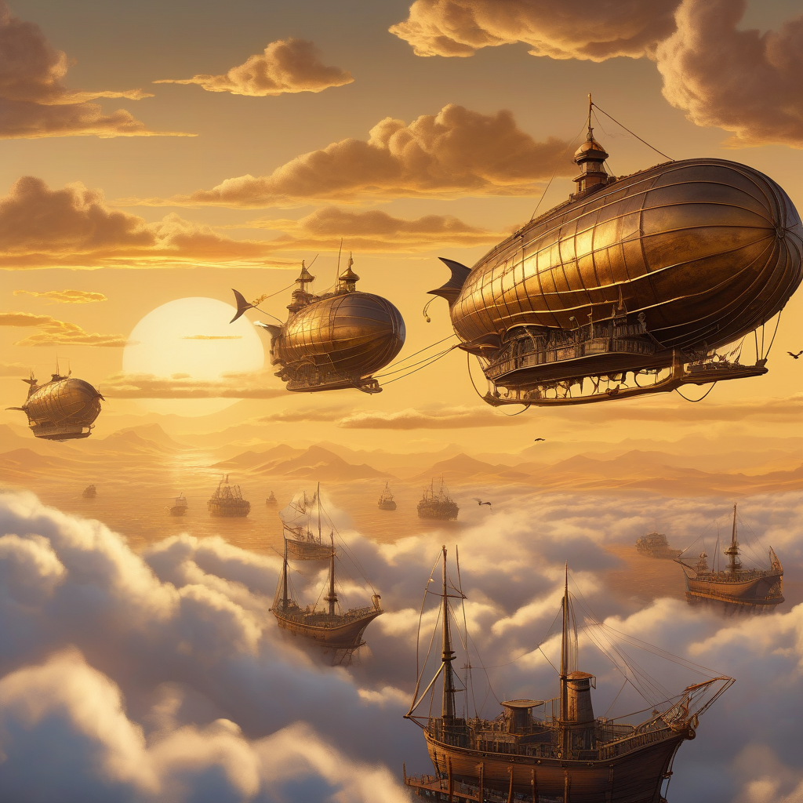
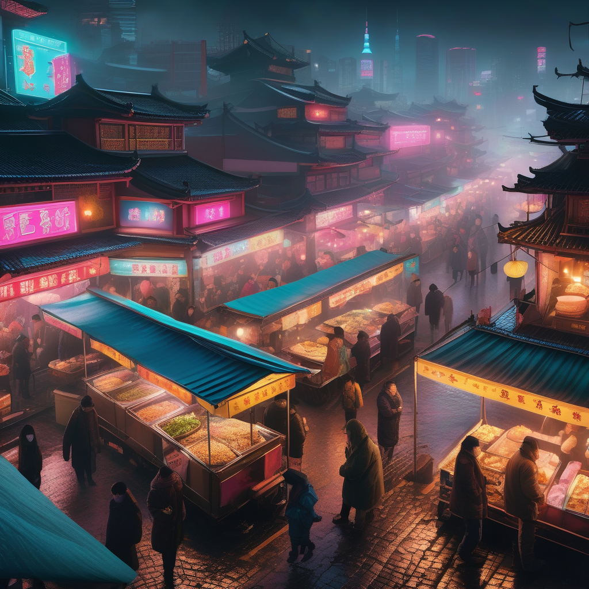

Kaggle 画廊
Muse 与 Kaggle 联手的设计实验 —— 每 4 小时一幅。
这是 Muse 和 Kaggle 联手做的一间小画廊：Muse 定主题、写提示词，Kaggle 的 GPU 用 SDXL base 1.0（1024×1024、30 步）把提示词画成图，每 4 小时出一幅。主题由 Muse 轮换着出，尽量复杂、什么类型都试一回，算是对这台免费 GPU 的一次能力测试。点开每幅图能看到介绍、GPU 型号和耗时；图有瑕疵也不藏着，诚实标注。主题库 12 个，轮完再循环。
共 3 幅 · 最近一次 2026-11-22 · 每 4 小时一幅
2026-11-22 · 最新一幅写实 · 史诗远景
蒸汽朋克舰队

黄铜和云海，这两个词放在一起就有蒸汽朋克的味道。舰队贴着云层走，甲板上的人小得像火柴，船舷的灯一盏一盏亮着，像是天上搬下来的一条街。看图的时候可以找找那几只海鸥，它们是画面里唯一不属于机器的东西。
看图手记：画面完整：黄铜飞艇舰队、云海、落日、远山、帆船与海鸥均到位，暖金色调与主题高度吻合。minor：右下前景船体底部略有裁切、左上云层间有两艘小船略显孤悬；无畸形、无水印、无伪字。
全部作品
2026-11-22 · 写实 · 史诗远景

2026-11-22 · 写实 · 水下奇观

2026-11-21 · 写实 · 复杂街景